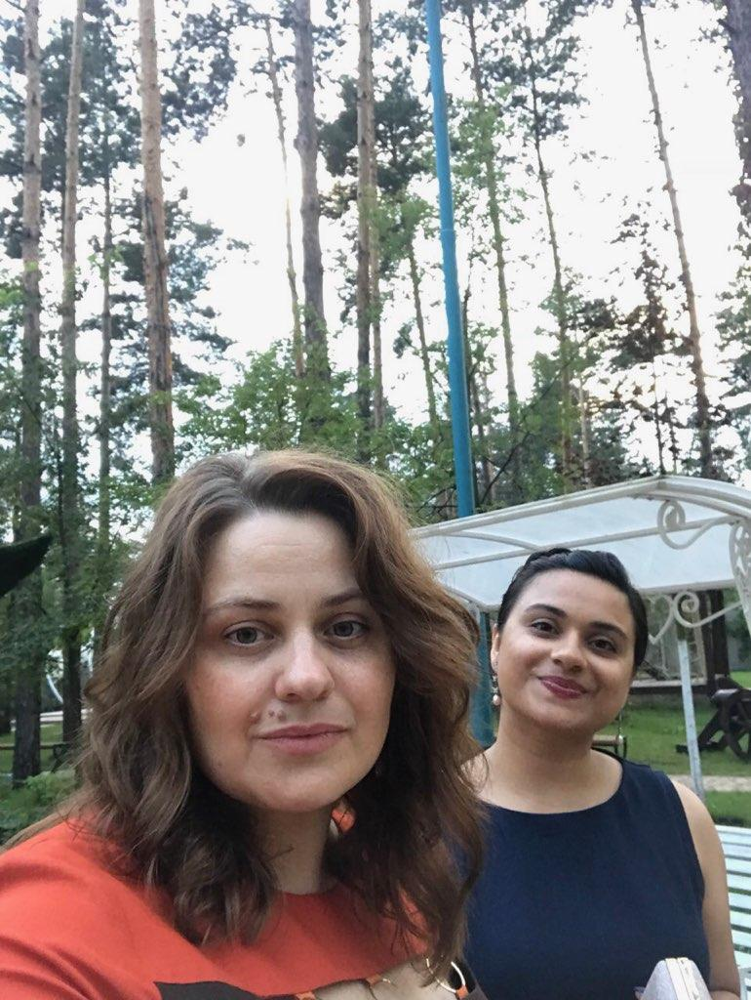
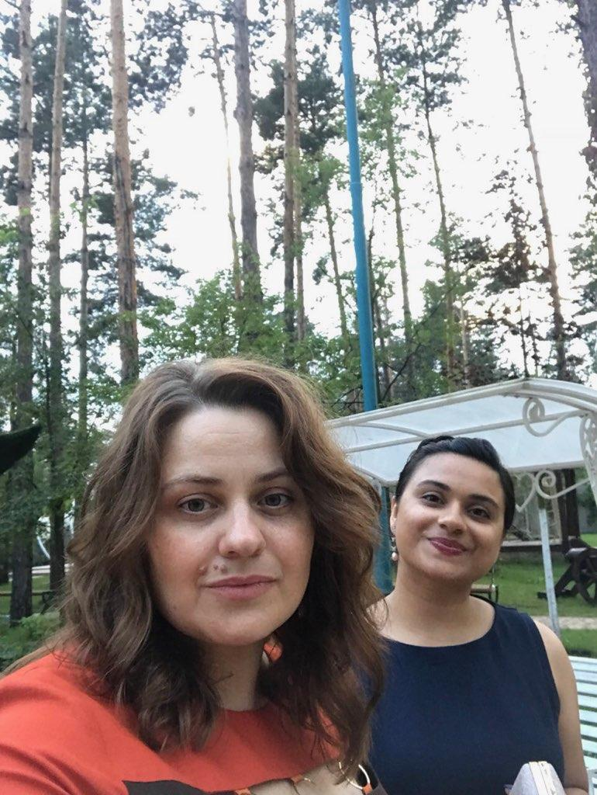

At Piece and Freedom Bakery, we believe that baking is an art that transcends borders, and we're excited to share the vibrant and diverse tastes of Kyiv, Ukraine with the welcoming community of Ames, Iowa.
 

Our bakery is more than just a place to indulge in delicious treats; it's a testament to the journey of our family from the bustling streets of Kyiv to the heart of the United States. Founded by a family passionate about their Ukrainian heritage, Piece and Freedom Bakery brings the essence of Kyiv's rich culinary traditions to your table.
Kyiv, the capital of Ukraine, is a city steeped in history and culture. Its colorful streets are a tapestry of flavors influenced by the blend of Eastern and Western influences. At Piece and Freedom Bakery, we draw inspiration from the vibrant markets of Kyiv, the warmth of family gatherings, and the joy of sharing homemade delicacies.


When you step into our bakery, you're not just stepping into a place of business; you're entering our home. The aroma of freshly baked pampushky (Ukrainian doughnuts) and korivka (fudge) fills the air, welcoming you to experience the authentic taste of Kyiv.
Every pastry, cake, and bread we create is a result of time-honored recipes passed down through generations, combined with a touch of innovation to excite your taste buds. We use only the finest ingredients, ensuring that each bite takes you on a delightful journey through the flavors of Ukraine.
At Piece and Freedom Bakery, we value tradition, family, and the freedom to share our culture through the universal language of food. Each treat represents a piece of our family's history and a slice of Kyiv's culinary heritage, meticulously crafted with love and care.
Our commitment to quality and authenticity is unwavering. We take pride in offering you an unforgettable experience, where you not only savor the tastes of Kyiv but also feel the warmth of Ukrainian hospitality.


Conveniently located in the heart of Ames, Iowa, our bakery warmly welcomes you to explore the culinary treasures of Kyiv. Whether you're a local seeking a taste of Ukraine or a traveler eager to experience something new, we invite you to be a part of our family at Piece and Freedom Bakery.
Thank you for joining us on this delectable journey as we celebrate the flavors of Kyiv and the freedom to share our passion with you. We look forward to serving you and filling your life with sweetness, one delightful bite at a time.
With warm regards,